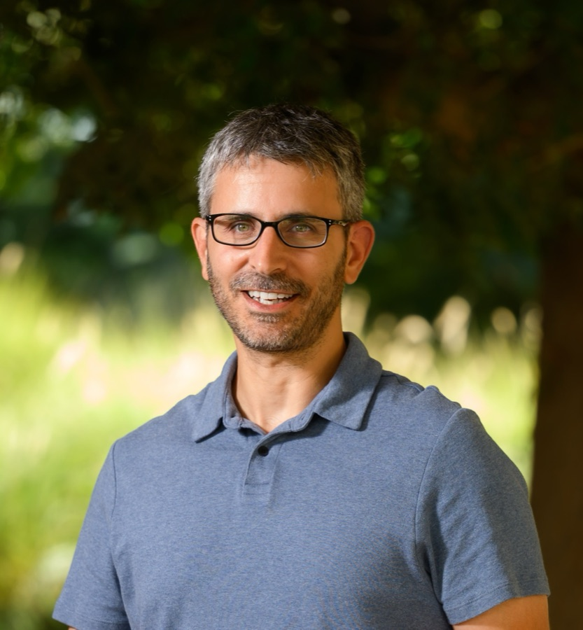
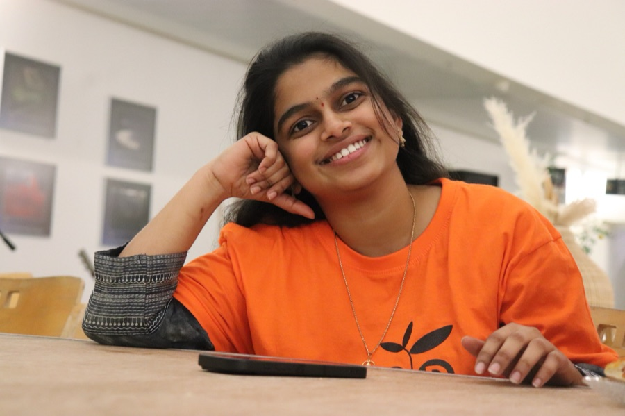

Maoz Dor
Principal Investigator · Senior Lecturer (Assistant Professor)
Research focuses on soil structure, carbon cycling, and advanced imaging methods for understanding soil as a living system.

Principal Investigator · Senior Lecturer (Assistant Professor)
Research focuses on soil structure, carbon cycling, and advanced imaging methods for understanding soil as a living system.
